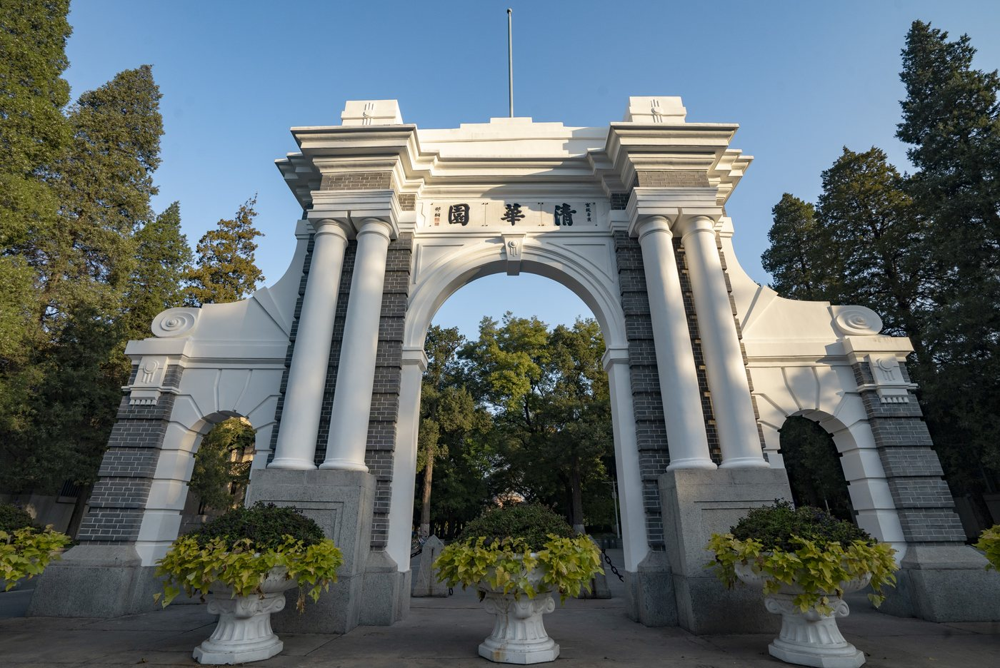

Ph.D. in Electrical Engineering
Tsinghua University · Advisor: Prof. Xinwei Shen
Ph.D. Student · Tsinghua University
I work on optimization for modern power systems, with current interests in offshore wind power systems, distribution network planning, and transportation electrification.
Biography
Wenhao Gao is currently pursuing his Ph.D. degree in Electrical Engineering at Tsinghua University. He received his B.E. degree from Chongqing University in 2022 and his M.Sc. degree from the National University of Singapore in 2023.
Tsinghua University · Advisor: Prof. Xinwei Shen
National University of Singapore · Advisor: Prof. Jimmy C.-H. Peng
Chongqing University
Tsinghua University · Advisor: Prof. Xinwei Shen
Tsinghua University · Course: Advanced Power Network Analysis
Research
My research focuses on optimization and decision-making for power and energy systems, especially under spatial, operational, and reliability constraints.
Updates
Began my Ph.D. journey in Electrical Engineering at Tsinghua University.
Graduated from the National University of Singapore with an outstanding master's thesis.
Scholarship
Publications are listed in English. Chinese-language papers are marked with (in Chinese).
A Novel Trench MOS TMBS Contact SBR. China Patent CN111668314A, Sep. 2020.
Visitors
A live visitor world map powered by ClustrMaps.
Visitor statistics are handled by ClustrMaps using the same map script style as the reference homepage.
Contact
